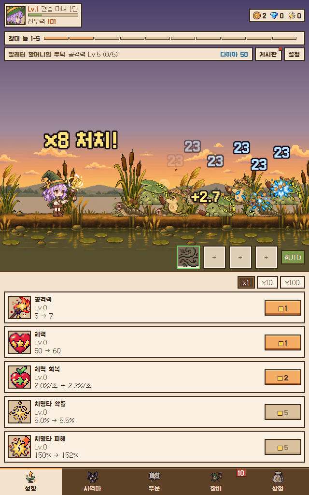
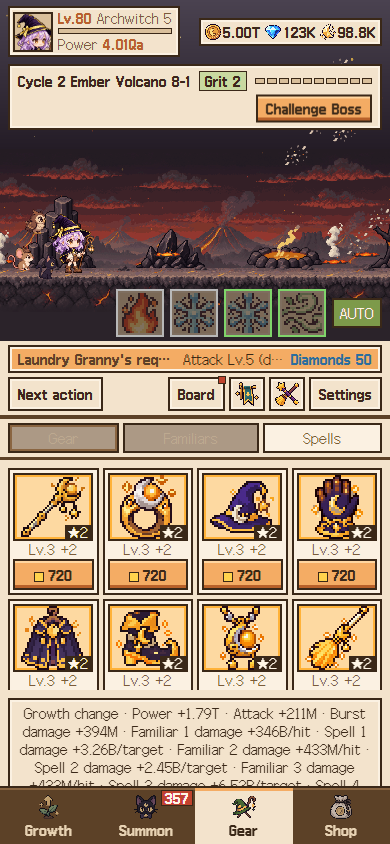
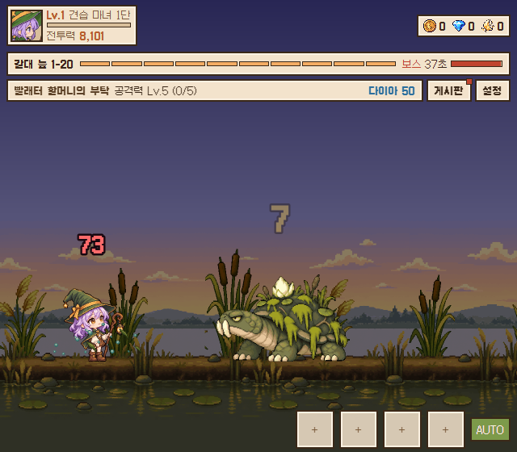
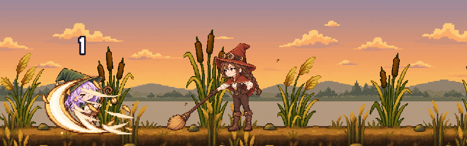
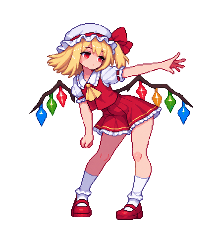

Lantern Mage Idle
An idle RPG about an apprentice witch who travels from region to region with her lantern, hunting monsters, passing trials set by senior witches and growing stronger while you are away. It is built for phones in portrait mode, with Korean, English, Japanese and Traditional Chinese text.
The core loop is already playable: auto-hunting across regions, boss encounters, familiars, spells, equipment, records and the first-time tutorial. We are now polishing the opening hours and the overall pacing.




AI Pixel Sprite Pipeline
Hand-animating every frame is the most expensive part of a 2D game. We are building a pipeline that takes a character design and a reference motion and produces frame-by-frame sprite animation, then checks the result frame by frame before it can be used. The goal is simple: output that goes straight into a game as a resource, not a pretty preview.
Below is how the output has improved since we started, using fan-art versions of well-known characters as a test set.
-
Stage 1 · late August
First traced sprites
Motion followed the reference closely, but the drawing was rough: edges were noisy, details drifted between frames and the result was not usable in a game.
-
Stage 2 · mid September
Whole actions drawn as one sequence
Instead of drawing frames one by one, each action is drawn as a single continuous sheet with a fixed camera and fixed proportions. Drawing quality jumped, and the character stopped growing or shrinking from frame to frame.
-

Stage 3 · late SeptemberFirst animation approved as a game resource
Clean transparent edges, a stable silhouette and exact frame timing. This was the first set we accepted as ready to drop into a game.
-
Stage 4 · end of September
Movement that holds together
A full run cycle with consistent feet, hair and accessories in every frame, approved under the same checks.
-
Stage 5 · October
Scaling to a roster
The same process is now being carried across a larger cast of characters, including signature moves with props. These are still under review.
Why not just pull frames from video? We know that generating a video and extracting frames from it is the fastest route today. We are deliberately taking this path instead: each action is drawn at an exact frame count and timing, with clean transparent edges, so the result works as a sprite without manual cleanup.
How we work
MF Game is a one-person studio that works with AI coding agents every day. Agents implement features, write and run tests, capture screenshots for visual review, and hand work over between sessions, while design decisions and final quality calls stay with the founder.